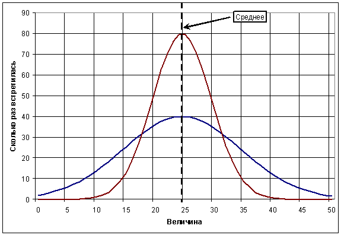
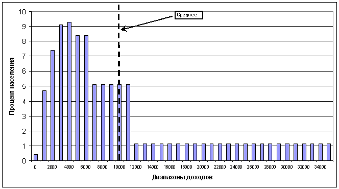

http://lex-kravetski.livejournal.com/172674.html
Lex Kravetski
Про среднюю зарплату и вообще среднее
Статья рекомендуется к массовой публикации.
В своей речи Зюганов сообщил, что полстраны живёт на зарплату в 5-6 тысяч рублей. Если быть более точным, его слова звучали так:
...из 74 миллионов работающих, 55 миллионов живут на 5-6 тысяч рублей в месяц
Общественность, преимущественно из числа жителей Москвы и Санкт-Петербурга, выразила недоумение: как же такое может быть? Средняя зарплата в России – 15 000 рублей, значит, все живут ну никак не меньше, чем на десять. Рассуждения оной общественности, как водится, базировались на мощном методе рассуждений, называемом «вдумчивый анализ ближайшего окружения». Пользоваться им следует примерно так: у меня зарплата – тысяча баксов, у моего друга Пети – полторы тысячи, а у Васи – восемьсот. Поэтому средняя зарплата, – что сразу понятно думающему человеку, – где-то в районе тысячи ста долларов. Иными словами – 30 000 рублей.
Думающая общественность обычно не заморачивается статистикой, поскольку вся статистика подделана, однако свободно оперирует статистическими терминами, смысла которых не понимает и определения которых не в состоянии сформулировать.
Про среднее общественность знает две вещи: анекдот про «среднюю температуру по больнице», из которого думающему человеку сразу понятно, что среднее ничего не значит, и тезис «среднее – это такой показатель, которому соответствует большинство объектов, о которых мы рассуждаем. Из этих прямо противоречащих друг другу знаний, в каждом конкретном случае выбирается то, которое лучше подходит для доказательства нравящегося думающему субъекту тезиса. Подобным же образом думающие, которых лично я называю Альтернативно Одарённые, поступают с идеей «вся статистика подделана». Так, если из статистики следует, что АО (альтернативно одарённый) неправ, то очевидно, что статистика подделана. Если следует, что прав – статистика верна. В качестве промежуточного случая может выступать произвольная трактовка статистических данных.
Само собой, крайние состояния можно комбинировать. Например, в одной и той же таблице одни колонки могут быть подделаны (производство зерна в СССР), а другие – абсолютно верны (производство зерна в Испании). При этом неважно, что таблицу составляли, например, шведы. Всё равно очевидно, что это коварный КГБ подтасовало данные.
Таким образом достигается невероятная гибкость: желаемый вывод следует в независимости от наличия или отсутствия чисел и от самих чисел тоже.
Однако стоит всё-таки разобраться с тем, что такое вообще это самое «среднее» и каким образом вдруг может получиться, что проклятый коммунист Зюганов сказал правду, хотя «здравый смысл» подсказывает, что коммунисты всегда врут.
Интересно, что не смотря на очевидность термина «среднее», не все могут сказать, каким образом его вычисляют. Лично меня это сильно поражает, как поразит и многих читателей, однако и такие варианты я встречал. Так вот, для тех, кто не знает: под «средним» в большинстве случаев подразумевают среднее арифметическое, которое вычисляется по формуле «сумма слагаемых, делённая на их количество». Иными словами, если у нас есть числа 1, 2 и 3, то их среднее (арифметическое) равно:
(1 + 2 + 3) / 3 = 2
Теперь к сути вопроса: что это самое «среднее» вообще показывает.
В общем случае оно показывает, что получится, если просуммировать некоторое количество чисел, а результат поделить на количество слагаемых. Однако эти бесценные сведения мало кому нужны. При этом, каждый неглухой постоянно слышит (а неслепой – ещё и читает) про широкую распространённость данного показателя. Спрашивается, а на хрена им так часто пользуются, если оно ничего не показывает?
Отвечаю: пользуются им потому, что есть некоторое множество случаев, когда среднее показывает вполне осмысленные вещи. В частности, если мы много раз измерим силу тока в цепи при неизменных её параметрах, то каждый раз прибор амперметр будет показывать нам немного разные значения. Если же мы вычислим среднее по полученным результатам, то эту величину вполне можно принять за силу тока в цепи.
Эта мысль появилась не с бухты-барахты, а вытекла из множества опытов. Оказалось, что если построить график, на котором по оси x будет отложена величина, а по оси y – количество измерений силы тока, в которых была получена именно эта величина, то график будет иметь колоколообразную форму с пиком, примерно совпадающим со средним арифметическим по всем измерениям.
Если быть более точным, то на графике откладываются не сами величины, а диапазоны величин. Понятно, что измеренная с бесконечной точностью величина встретится ровно один раз. Зато, если построить график, сколько раз нам встречаются значения от 1 до 2, от 2 до 3 и так далее, то результатом будет тот самый «колокол». Именно про него и ведётся речь.
Иными словами, ошибки измерений «природных» величин имеют
гауссово распределение (то есть, если для них построить означенный график, то
выйдет примерно тот самый «колокол»). Если результаты измерений представить как
сумму среднего арифметического и некоторого отклонения, то пик «колокола»
придётся на среднее арифметическое. Понятное дело, что везде следует читать
«примерно», однако эта «примерность» становится всё более точной с увеличением
количества экспериментов.
Как выглядит описанное, можно засмотреть на спец-рисунке:

Графиков я специально нарисовал два. Легко видеть, что среднее у них совпадает, однако сразу понятно, что графики чем-то отличаются. Это самое отличие принято характеризовать дисперсией (или производным от неё среднеквадратическим отклонением – корнем из дисперсии). Эта характеристика по смыслу означает «ширину» графика. А статистический её смысл таков: большое количество элементов выборки (в вышеописанном примере под элементами выборки следует понимать отдельные измерения) будет лежать в диапазоне от среднего арифметического минус среднеквадратическое отклонение до среднего арифметического плюс среднеквадратическое отклонение. Про это ещё можно сказать: «величина будет распределяться в некотором диапазоне вокруг среднего, определяемом среднеквадратическим отклонением».
Скажем так, подразумевается, что выход отдельных элементов выборки за пределы этой самой «ширины» возможен, но маловероятен.
Итак, для характеристики особого рода распределений используются две величины. При манипуляционном же обнародовании статистики нам часто указывают одну, что приводит к недопониманию, но может вызвать нужный манипулятору эффект – как мы видели, графики с одним и тем же средним показывают разные состояния, однако если упомянуть одно только среднее, то можно сделать вид, что состояния идентичны.
Теперь вернёмся к зарплатам. По сути, сведения о доходах, описывающие положение вещей в стране, весьма похожи на способ построения графика. А именно: по оси x откладываются диапазоны доходов (0-1000, 1000-2000, 2000-3000...), а по оси y – количество людей, чей доход лежит в данном диапазоне. Казалось бы, самое оно ввести среднее, как характеристику знакомого нам «колокола». И альтернативно одарённые, вкупе с манипуляторами его вводят. Однако...
Среднее и дисперсия описанным образом характеризуют только гауссово распределение. Если распределение иное, то смысл этих величин меняется. Например, для распределения на нижеприведённом рисунке среднее ни с каким «пиком колокола» не совпадает.

Отчасти дисперсия намекнёт нам, что налицо какой-то подвох, но в явном виде о принципиально иной форме графика не скажет. А среднее не скажет вообще ни о чём.
Однако при ловком оперировании «средней зарплатой» такого рода подробностей не сообщают. И народ уверен, что всё научно и поэтому всё нормально. Средняя зарплата – вон она какая. Пятнадцать тысяч!
Какие-то обрывки воспоминаний из прошлого при этом напоминают о «колоколах», но роль этих обрывков скорее негативная. Ведь благодаря этим обрывкам граждане машинально представляют себе колоколообразное распределение доходов вокруг среднего по зарплате, хотя никто ведь не доказал, что распределение доходов в России именно такое.
Теперь уже легко предположить ситуации, при которых описанное Зюгановым будет реальностью. Например, если один человек имеет зарплату в миллион рублей, а другие 99 – тысячу рублей, то среднее по их зарплатам – примерно 11 000. Легко видеть, что 99% людей из данного расклада в одиннадцать раз не добирают до средней зарплаты. Зато как звучит!
Следует отметить, что в предыдущем абзаце на данный момент приведена только лишь иллюстрация, а не реальное положение вещей. Для анализа реальности же следует припасть к истокам. В качестве истоков воспользуемся сайтом Федеральной службы государственной статистики.
К сожалению, на сайте пока отсутствуют данные за 2007-й, поэтому анализ проведём на основе 2006-го.
Засмотрим таблицу распределения среднедушевых ежемесячных доходов.
|
2000 |
2001 |
2002 |
2003 |
2004 |
2005 |
2006 |
|
|
Все население |
100 |
100 |
100 |
100 |
100 |
100 |
100 |
|
в том числе со среднедушевыми |
|
|
|
|
|
|
|
|
до 1000,0 |
20,4 |
12,5 |
6,8 |
3,3 |
1,9 |
0,8 |
0,4 |
|
1000,1-1500,0 |
19,9 |
15,0 |
10,6 |
6,5 |
4,3 |
2,3 |
1,3 |
|
1500,1-2000,0 |
16,4 |
14,4 |
11,8 |
8,5 |
6,1 |
3,9 |
2,4 |
|
2000,1-3000,0 |
20,7 |
21,7 |
21,0 |
17,7 |
14,3 |
10,5 |
7,4 |
|
3000,1-4000,0 |
10,4 |
13,4 |
15,2 |
15,1 |
13,7 |
11,6 |
9,1 |
|
4000,1-5000,0 |
5,3 |
8,2 |
10,4 |
11,7 |
11,7 |
10,9 |
9,3 |
|
5000,1-7000,0 |
4,4 |
8,2 |
11,9 |
15,4 |
17,0 |
17,7 |
16,8 |
|
7000,1-12000,01) |
2,5 |
6,6 |
12,3 |
15,2 |
19,6 |
24,2 |
26,8 |
|
свыше 12000,0 |
|
|
|
6,6 |
11,4 |
18,1 |
26,5 |
Для построения графика распределения (точнее, даже не графика, а гистограммы) таблицу придётся несколько преобразовать. В частности, сделать диапазоны доходов равномерными. Так, диапазоны 1000-1500 и 1500-2000 будут слиты в один. А диапазоны 5000-7000 и 7000-12000 будут разделены в соответствии с оптимистическим предположением, что доходы в этих диапазонах распределены равномерно.
Наибольшую трудность представляет диапазон «свыше 12000». Совершенно непонятно, почему этот диапазон является последним, если средняя зарплата на 2006-й год составляет 10633 рубля. Ведь это даже не средний доход, а средняя зарплата - и вдруг в районе этой самой средней зарплаты все данные сливаются в один диапазон. Однако других официальных данных у меня нет, поэтому придётся исходить из этих.
Так вот, при таком раскладе для получения средней зарплаты в 10633 рубля, средний доход группы «свыше 12000» должен составлять что-то около 23800 рублей (это не навскидку – это я вычислил). Следует понимать, что средняя зарплата тут берётся в качестве отправной точки весьма приблизительно – чтобы хоть как-то «разложить» группу «свыше 12000» на более мелкие. При желании с тем же успехом можно за отправную точку взять иное число. Суммарный процент входящих в группу «свыше 12000» при этом, понятно, не изменится, а просто «расплывётся» на больший диапазон.
Применим уже знакомый нам оптимизм и предположим, что группа эта простирается от 12000 до (23800-12000) + 23800 = 35600 (если есть желание, распространите её до ста тысяч или до двухсот), а доходы внутри неё распределены опять же равномерно.
Наш оптимизм несколько портит тайное знание о людях с ежемесячными доходами в миллионы рублей, которые ещё сильнее испортят наше распределение (поскольку каждый миллионный доход смещает среднее в свою сторону, однако понижает процент граждан, имеющих доходы ниже среднего), да и в городе вида «Москва» зарплаты больше пятидесяти тысяч – не редкость. Однако сделаем вид, что всего этого нет, поэтому распределение у нас более красивое.
После подобного рода преобразований получается гистограмма распределения доходов следующего вида:

Собственно, невооружённым взглядом видно, что распределение не гауссово. То есть, среднее для него не имеет того смысла, который в него привычно вкладывают.
Взглянем более пристально. В частности, отметим, что благодаря «оптимистическому» заполнению пробелов в статистике на графике образовались подозрительные разрывы. Именно поэтому метод и был назван «оптимистическим» – в реальности распределение должно быть почти гладким (каковое мы наблюдаем в левой части графика), поэтому проценты людей относительно доходов в правой части завышены. Завышение начинается примерно с 7-8 тысяч рублей.
Однако пока закроем на это глаза. Взглянем вместо этого на левую часть. И увидим там знакомый нам «колокол». Колокол имеет пик в упомянутых Зюгановым 5000 рублей. К двенадцати тысячам рублей процент населения с таким доходом спадает предположительно до одного-трёх (пять – верхний предел, но тогда после двенадцати тысяч спад будет более резким). После этого график выходит на так называемый «хвост» – диапазон мелких значений, который тянется вплоть до доходов в сотни миллионов рублей в месяц. Что характерно, средняя зарплата практически совпадает с выходом графика на этот «хвост».
Такая ситуация в естественнонаучных процессах трактуется как аномальная. То есть, то, что принималось за результаты действия одного процесса, на самом деле является суперпозицией (сочетанием) как минимум двух. Один из них обуславливает наличие колокола с пиком в пяти тысячах и «размахом крыльев» от нуля до двенадцати тысяч, а второй – длинный плавный спад с величинами порядка одного процента.
В России проживает два народа.
Примерно такой вывод можно сделать из данной гистограммы. Более того, при таком раскладе не исключено, что в реальной статистике «колокола» два. И не исключено, что именно для сокрытия этого факта обрывается на «больше 12000». Однако проверить этого мы не можем.
Зато мы можем проверить слова Зюганова (напоминаю, сейчас мы смотрим на статистику 2006-го года).
А именно: согласно официальной статистике...
40% процентов населения России имеет доход менее 6000 рублей.
Порядка 65% населения России имеет доход ниже официальной средней зарплаты.
15% населения России имеет доход ниже прожиточного минимума. Это 21 миллион человек. (можно проверить здесь).
Следует отметить, что в статистике не упоминается, идёт ли речь о трудоспособных гражданах или же о всех гражданах вообще. Однако есть подозрения, что в данную статистику не попадают нетрудоспособные по малолетству – иначе процент людей с доходами до 1000 был бы существенно выше. Взглянув же на таблицу с пенсионной статистикой, можно заключить, что в статистику доходов не попадают и пенсионеры: пенсионеры составляют более четверти населения, а средний размер их пенсии – 2700 рублей. Если бы пенсионеры попали в статистику доходов, то суммарный процент по группам от 0 до 4000 рублей был бы как минимум 25% (это если считать, что кроме пенсионеров в эти группы вообще никто не попал), суммарный процент же всего 21.
Иными словами скорее всего данная статистика касается только трудоспособной части населения.
Принимая население России за 142 миллиона человек (источник), а трудоспособную его часть за 74 миллиона (источник), вычислим, что доходы ниже 6000 рублей в 2006-м году имели 29 миллионов человек. Что почти в два раза меньше 55-и зюгановских. Зюгановский же уровень находится на уровне «меньше 11000 тысяч». Иными словами, Зюганов сильно преувеличил. Типа, гад.
Однако мы забыли, что на каждого трудоспособного россиянина приходится один нетрудоспособный. И вот тут всё становится на свои места: действительно, трудящийся на самого себя может потратить примерно половину дохода. Остальная её часть уйдёт нетрудоспособным членам семьи. 11000/2 = 5500.
Но ядрёнть! 11000 – это верхняя планка для означенной группы населения. То есть, в реальности большой процент экономически активных (да и всех граждан в целом) живёт на ещё меньший доход, нежели сказал Зюганов.
Действительно, при расчётах «на семью» следует добавить ещё 2000-3000 пенсионных или пособий, однако всё равно как-то не ахти получается. И практически так, как сказал Зюганов.
Лирическое отступление: я вот подумал, а многие ли из альтернативно одарённых думающих смогут отличить жизнь на шесть тысяч рублей в месяц от жизни на восемь?
Примерно такая вот ситуация получается. Зюганов, не исключено, несколько сгустил краски, однако даже по оптимистическим оценкам сгущение измеряется в процентах, а не в разах. И не исключено, данные у него были годовалой давности, поскольку свежие непонятно где брать.
Ну и на сладкое ещё немного оптимистической статистики (речь по-прежнему про 2006-й):
Если ваша зарплата составляет 26500 рублей, то вы входите в 10% наиболее богатой части населения России. Это – экономически активной части. Если сравнивать по всему населению вам уже 15000 рублей в месяц для этого достаточно.
Если ваша зарплата – 40000 рублей, радуйтесь: вы вошли в один процент населения России. Поэтому весьма рекомендую и дальше о жизни окружающих судить по себе.
В предыдущем случае ваша зарплата в четыре раза выше средней по стране. И в семь раз выше, чем зарплата половины трудящихся.
А теперь про счёт денег в чужих карманах:
За год доход упомянутых граждан составил 290 миллиардов долларов. Это 290 * 26.5 / 12 = 640 миллиардов рублей в месяц (76 * 26.5 / 12 = 167 миллиардов рублей у первой десятки). Доходы этих пятиста человек могли бы обеспечить среднюю зарплату в 10000 рублей в месяц шестидесяти четырём миллионам россиян. При этом доходов десятерых из них хватило бы на обеспечение шестнадцати с половиной миллионов россиян средней зарплатой в десять тысяч рублей.
В конце процитированной статьи написано следующее:
Трудно понять людей, утверждающих, что мы живем хуже, чем на Западе. Наш ответ таким скептикам один: господа, если это так, то почему мы по количеству миллиардеров первые в Европе, хотя и уступаем США?
Да, товарищи, попробуйте понять, почему эти люди не могут понять.
UPDATE: По просьбам трудящихся во всех местах, где речь идёт о доходе, слово «зарплата» исправлено на слово «доход». Действительно, местами эти слова перемешивались, не смотря на то, что постоянно подчёркивалось, что речь идёт о доходе.
Поскольку ряд граждан выразил сомнения в том, что статистика касается только экономически активной части населения, то в качестве альтернативного варианта следует рассматривать вариант более широкой группы, вплоть до включения в статистику всего населения. Большинство выводов при этом не меняется, за исключением того места, где предлагается поделить средний доход на два. Если статистика касается более широкой группы населения, то коэффициент, на который делится доход лежит в интервале от 1 до 2. Нижняя граница – случай, при котором учтено всё население, верхняя – если учтена только экономически активная его половина.